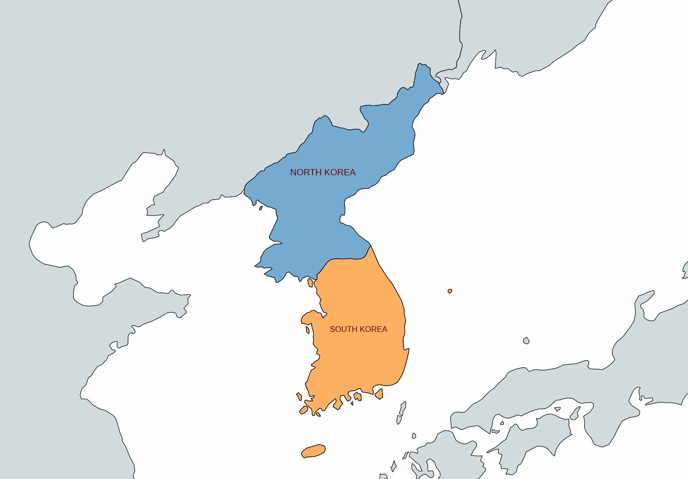
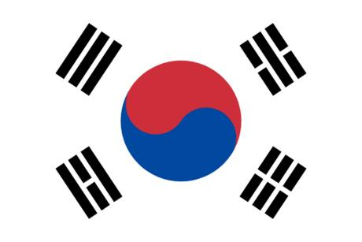
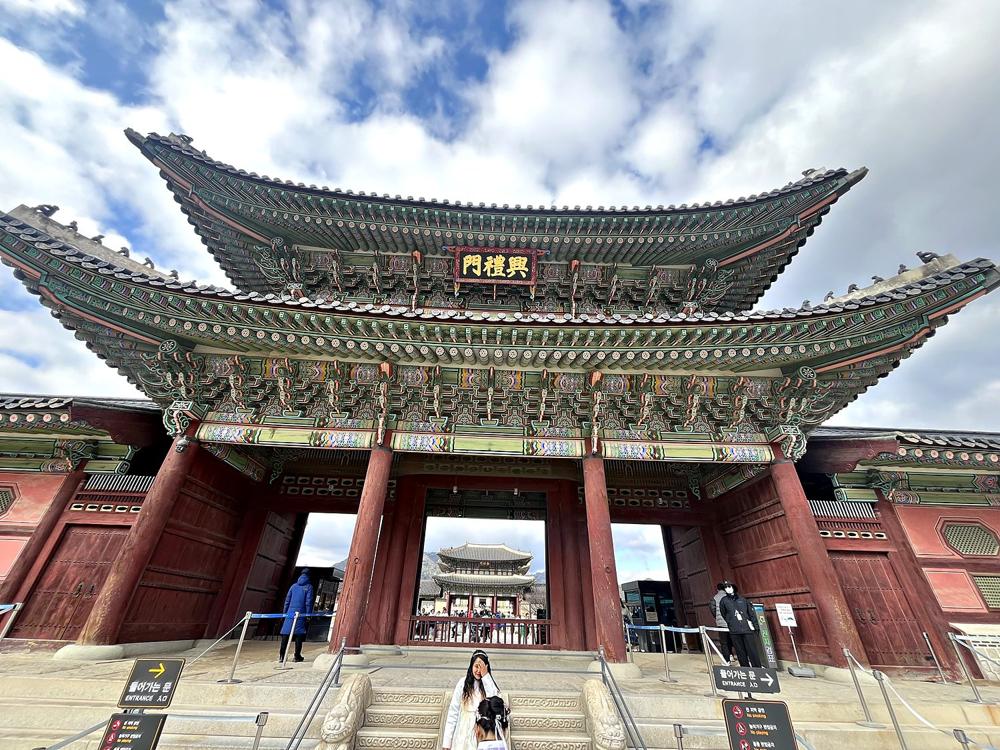
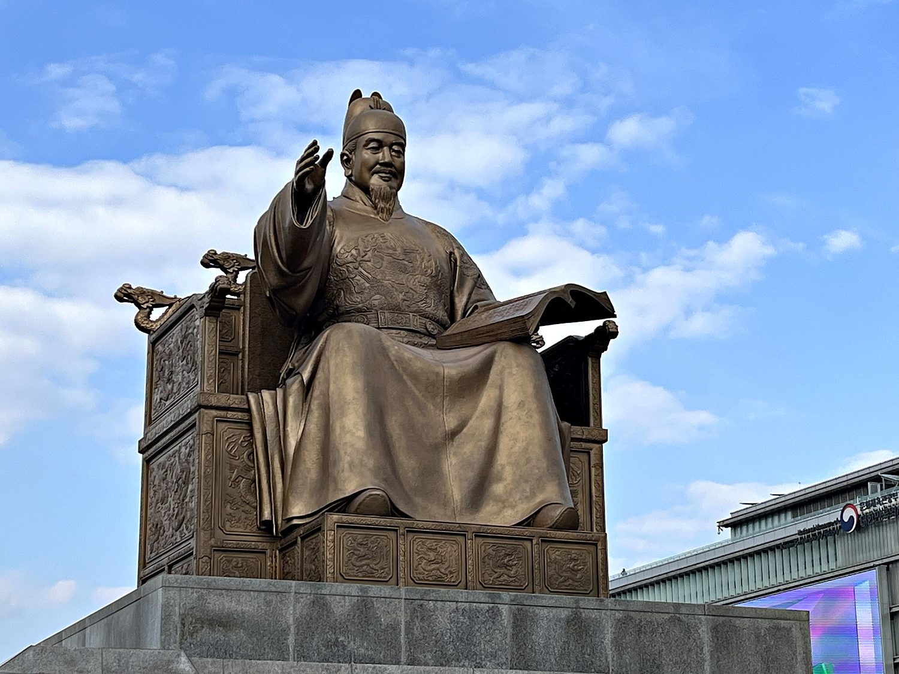
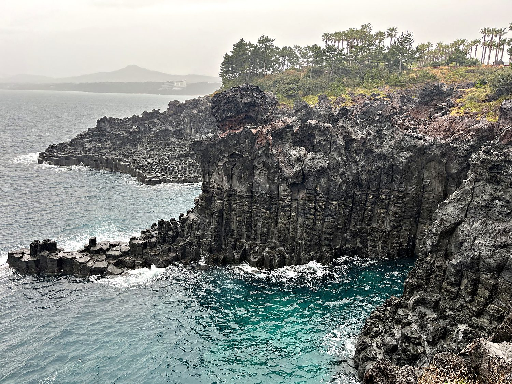

I flew into Seoul in February 2024, straight from a month of teaching in China. The trip turned into something rare for me: a genuine reunion tour with four close old friends from my master’s degree (Ashton, Bo, Kailey, and Neha). For once I let myself follow the group rather than sprinting to tick off every monument in sight. South Korea did not make this entirely easy. My first hour in the country involved a train-ticket machine that broke mid-transaction and required a technician to physically resuscitate it. We cheerfully diagnosed this as “Korean technology at its finest,” a delightful irony in a country that essentially manufactures the future. Once past the ticket machine, Seoul revealed itself as one of the most charming big cities I have visited. It is ringed by hills and small mountains, stitched together by an immaculate metro, and packed with the street stalls and food markets that I could happily have grazed at for a week straight.
Seoul has been the capital of Korea for over six hundred years, established as the seat of the Joseon dynasty in 1394 and never really relinquishing the title since. It is a city of striking contrasts. A fourteenth-century royal palace sits a short walk from the neon canyons of the shopping districts. The glass towers of the Gangnam district are deserted at 9pm and then, inexplicably, are bustling an hour later. This modern neighborhood only rises a few metro stops from centuries-old Buddhist temples and warrens of traditional hanok houses. My days here were spent wandering between these registers: honey-almond snacks at the top of Namsan, rice wine and pancakes at the heaving Gwangjang night market, and quiet afternoons in the Bukchon Hanok Village, where wooden homes with tiled roofs cling to the hillside in the shadow of the modern skyline. It is a place that combines three thousand years of history with forty years of breakneck development.

Korea's history stretches back millennia through a succession of kingdoms and dynasties. Its cultural high-water mark is often placed in the fifteenth century under King Sejong the Great, whose reign gave the country its own writing system, Hangul. Before Hangul, Koreans wrote in classical Chinese characters that only a scholarly elite could master. Sejong's alphabet, designed to be learnable “by a wise man in a single morning,” democratized literacy and remains a genuine point of national pride. The peninsula is a slender finger of land wedged between China and Japan, and its entire history can be summed up in short as being invaded by either or both its neighbors. In the late sixteenth century Japan launched a full-scale invasion, repelled in large part by Admiral Yi Sun-sin and his ingenious armored “turtle ships,” whose replicas I admired at Seoul's War Memorial and whose story every Korean schoolchild knows by heart.

The modern nation was forged through a far more painful century. Japan formally annexed Korea in 1910 and ruled it harshly until 1945, suppressing the language and culture in ways that still color relations between the two countries today. Liberation at the end of World War II brought division: the peninsula was split along the 38th parallel into a Soviet-backed north and an American-backed south. In 1950 the North's invasion touched off the Korean War, a brutal three-year conflict that drew in China and the United States. It ended in a stalemate – technically an armistice, not a peace – that persists to this day. What South Korea did with the ruins is one of the great stories of the twentieth century. From one of the poorest countries on Earth in the 1950s, it built itself within a single generation into a global powerhouse of technology, shipbuilding, and, as a certain 2012 export taught the world, extremely catchy pop music.
Gyeongbokgung, the “Palace Greatly Blessed by Heaven,” was the main royal residence of the Joseon dynasty. It was first built in 1395 and rebuilt more than once after fires and the Japanese occupation did their best to erase it. Passing through its monumental gates, you enter a vast complex of throne halls, pavilions, and courtyards laid out according to strict principles of geomancy, backed by the mountains that Seoul's founders believed would protect the seat of royal power. I wandered it on my own on a bright, cold afternoon, and while the architecture eventually reaches a point where every magnificent painted eave starts to resemble the last, the scale and symmetry of the place are genuinely humbling. It is the clearest surviving statement of how the Joseon kings saw themselves as the earthly hinge between heaven and their people.

A short walk south of the palace, seated in bronze atop Gwanghwamun Square, is a statue of King Sejong the Great himself. He is arguably the most revered figure in Korean history and, not coincidentally, the face on the 10,000-won note. Sejong's fifteenth-century reign is remembered as a golden age of science, music, and administration, but his enduring monument is Hangul, the alphabet he commissioned to lift ordinary Koreans out of illiteracy. It is a rare thing to be able to point to the precise moment a nation gained its own script. It is rarer still for that script to be as elegantly logical as Hangul, whose consonants are shaped to mimic the position of the tongue and mouth. Standing beneath the statue, book in hand and arm outstretched, Sejong makes a compelling case that the mightiest thing a king ever built was not a wall or a palace but an alphabet.

For the last leg of the trip I flew south to Jeju, the volcanic island off Korea's southern coast that Koreans treat as their own tropical getaway. Jeju is essentially one enormous shield volcano, Hallasan, ringed by lava caves, waterfalls, and coastline sculpted by ancient eruptions. Nowhere is that more dramatic than at Jusangjeollidae, where the sea has carved the cooled basalt into a cliff of near-perfect hexagonal columns. The columns form as thick lava cools slowly and cracks into geometric prisms, the same process behind Northern Ireland's Giant's Causeway. Watching the turquoise surf hammer against them on a wild, windy day was one of the more mesmerizing hours of the whole month. Highlights were amazing sea views, lava-tube caves, a waterfall that empties straight into the ocean, and the sobering discovery that “Gangnam Style” remains the only K-pop song a car full of foreigners can reliably sing along to.
